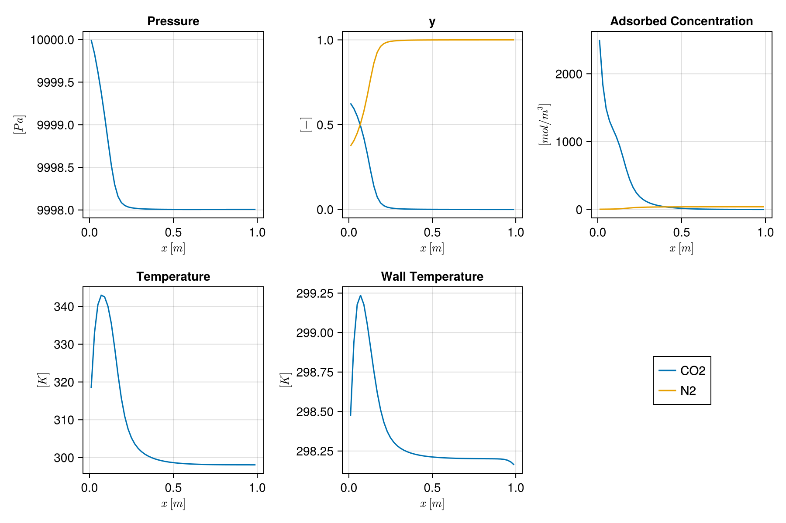

Building a process from its parts
This example sets up a four-stage vacuum swing adsorption (VSA) process from its physical parameters: the gas, an isotherm given component by component, an adsorbent, a column, a flowsheet of a bed and devices, and a cycle of steps. Each layer can be edited, saved to a file and reused on its own. The column separates a CO₂/N₂ mixture on zeolite 13X.
Everything is in SI units. Mocca.Units has conversions, so that 0.1bar is 1e4 (Pa) and -36.64kJ_per_mol is -36640.0 (J/mol).
import Mocca
using Mocca.Units1. The gas
Components are known by name. Their molar masses, heat capacities and viscosities default to standard values; here the molar mass of N₂ and the heat capacities follow Haghpanah et al. (2013). The mixture viscosity and density default to those of the feed.
gas = Mocca.Gas(["CO2", "N2"];
molar_masses = (N2 = 28e-3,),
heat_capacities = (CO2 = 697.5687, N2 = 1096.4),
diffusivity = 1.6e-5)Gas of CO2, N2
CO2 M = 44.01 g/mol, cp = 697.57 J/(kg·K)
N2 M = 28.0 g/mol, cp = 1096.4 J/(kg·K)
viscosity from the feed, density from the feed, diffusivity 1.6e-5 m²/s2. The isotherm, by component
A dual-site Langmuir isotherm. Each component lists its own parameters, so adding or removing a component does not mean editing parallel arrays. Capacities are per m³ of adsorbent here (basis = :mass takes mol/kg), and affinities are on a concentration basis [m³/mol].
isotherm = Mocca.dual_site_langmuir(
"CO2" => (qsb = 3489.44, b0 = 8.65e-7, ΔUb = -36.64121kJ_per_mol,
qsd = 2872.35, d0 = 2.63e-8, ΔUd = -35.69066kJ_per_mol),
"N2" => (qsb = 6613.551, b0 = 2.5e-6, ΔUb = -15.8kJ_per_mol))Mocca.DualSiteLangmuirData(["CO2", "N2"], [3489.44, 6613.551], [8.65e-7, 2.5e-6], [-36641.21, -15800.0], [2872.35, 0.0], [2.63e-8, 0.0], [-35690.66, 0.0], 298.15, :volume)3. The adsorbent
Its density and heat capacity, and the particle properties that set the macropore diffusion of the linear driving force for mass transfer.
adsorbent = Mocca.Adsorbent("my zeolite 13X";
isotherm = isotherm,
density = 1130.0, # kg/m³
heat_capacity = 1070.0, # J/(kg·K)
particle_diameter = 2mm,
particle_porosity = 0.35,
tortuosity = 3.0)Adsorbent my zeolite 13X
dual-site Langmuir isotherm for CO2, N2
density 1130.0 kg/m³, heat capacity 1070.0 J/(kg·K)
particles 2.0 mm, porosity 0.35, tortuosity 3.0Check the isotherm before simulating: the loading of each component in equilibrium with the feed, in mol/kg, and the CO₂ isotherm at two temperatures.
q = Mocca.equilibrium_loading(adsorbent, gas; pressure = 1bar, temperature = 298.15, composition = (CO2 = 0.15, N2 = 0.85))
println("loading in equilibrium with the feed: CO₂ $(round(q[1], digits = 2)), N₂ $(round(q[2], digits = 3)) mol/kg")
pressures = [0.01, 0.05, 0.1, 0.2, 0.5, 1.0] .* bar
table = Mocca.isotherm_table(adsorbent, gas, "CO2"; pressures = pressures, temperatures = [298.15, 348.15])
for (P, row) in zip(pressures, eachrow(table))
println(rpad("$(P / bar) bar", 10), join([rpad("$(round(x, digits = 2)) mol/kg", 14) for x in row]))
endloading in equilibrium with the feed: CO₂ 3.43, N₂ 0.02 mol/kg
0.01 bar 1.52 mol/kg 0.27 mol/kg
0.05 bar 2.76 mol/kg 1.01 mol/kg
0.1 bar 3.19 mol/kg 1.55 mol/kg
0.2 bar 3.63 mol/kg 2.12 mol/kg
0.5 bar 4.26 mol/kg 2.78 mol/kg
1.0 bar 4.72 mol/kg 3.22 mol/kgThe adsorbent can be saved and shared, and Mocca's library holds those of published studies:
path = Mocca.save_adsorbent(joinpath(mktempdir(), "my_13x.json"), adsorbent)
println(Mocca.library_adsorbents())["silica_gel_krishnamurthy_2014", "zeolite_13x_haghpanah_2013", "zeolite_13x_krishnamurthy_2014"]4. The column
column = Mocca.Column(
length = 1.0, # m
radius = 14.45cm,
outer_radius = 16.2cm, # of the wall
porosity = 0.37, # bed void fraction
axial_conductivity = 0.0903, # W/(m·K)
wall = Mocca.Wall(density = 7800.0, heat_capacity = 502.0, conductivity = 16.0),
inner_heat_transfer = 8.6, # W/(m²·K), bed to wall
outer_heat_transfer = 2.5, # W/(m²·K), wall to surroundings
ambient_temperature = 298.15)Column 1.0 m long, radius 0.1445 m (wall to 0.162 m), bed porosity 0.375. The flowsheet
A bed and three devices. The feed comes in at 1 bar and 25 °C.
feed = Mocca.Feed(gas; composition = (CO2 = 0.15, N2 = 0.85), temperature = celsius(25), pressure = 1bar)
fs = Mocca.Flowsheet(gas, feed)
Mocca.add_bed!(fs, :Bed, adsorbent, column; ncells = 50)
Mocca.add_device!(fs, :V_feed, :feed; at = (:Bed, :bottom))
Mocca.add_device!(fs, :V_product, :product; at = (:Bed, :top))
Mocca.add_device!(fs, :V_vacuum, :extract; at = (:Bed, :bottom))
fsFlowsheet with 1 unit and 3 devices for CO2, N2
Bed: fixed bed of my zeolite 13X, 50 cells
bottom V_feed (feed), from boundary at 1.0 bar; V_vacuum (extract), to boundary at 1.0 bar
top V_product (product), to boundary at 1.0 bar
6. The cycle
Steps are written in process terms. Each opens the devices it needs, found by their roles, and keeps the others closed. A ramp starts from the pressure the step before left the bed at, around the cycle.
cycle = Mocca.Cycle([
Mocca.Pressurise(15.0),
Mocca.Adsorb(15.0; velocity = 1.0),
Mocca.Blowdown(30.0; to = 0.2bar),
Mocca.Evacuate(40.0; to = 0.1bar),
])Cycle of 4 steps
pressurisation 15.0 s
adsorption 15.0 s
blowdown 30.0 s
evacuation 40.0 s
7. The process, and a check of the description
process = Mocca.Process(fs, cycle)
issues = Mocca.validate(process)
println(isempty(issues) ? "no problems found" : join(sprint.(showerror, issues), "\n"))
processProcess: CO2/N2 feed at 1.0 bar, 298.15 K, capturing CO2
Bed: fixed bed of my zeolite 13X, 50 cells
bottom V_feed (feed), from boundary at 1.0 bar; V_vacuum (extract), to boundary at 0.1 bar
top V_product (product), to boundary at 1.0 bar
cycle of 4 stages, 100.0 s:
pressurisation 15.0 s V_feed
adsorption 15.0 s V_feed, V_product
blowdown 30.0 s V_product
evacuation 40.0 s V_vacuum
8. Simulate
result = Mocca.simulate(process; cycles = 3)
bed_states = [s[:Bed] for s in result.states]
f_outlet = Mocca.plot_cell(bed_states, fs[:Bed], result.timesteps, 50)
f_column = Mocca.plot_state(bed_states[end], fs[:Bed])
9. Save the whole process
The process file holds every layer, and reads back as the same process.
file = Mocca.write_process(joinpath(mktempdir(), "my_vsa.json"), process)
same = Mocca.read_process(file)Process: CO2/N2 feed at 1.0 bar, 298.15 K, capturing CO2
Bed: fixed bed of my zeolite 13X, 50 cells
bottom V_feed (feed), from boundary at 1.0 bar; V_vacuum (extract), to boundary at 0.1 bar
top V_product (product), to boundary at 1.0 bar
cycle of 4 stages, 100.0 s:
pressurisation 15.0 s V_feed
adsorption 15.0 s V_feed, V_product
blowdown 30.0 s V_product
evacuation 40.0 s V_vacuum
Example on GitHub
If you would like to run this example yourself, it can be downloaded from the Mocca.jl GitHub repository.
This page was generated using Literate.jl.